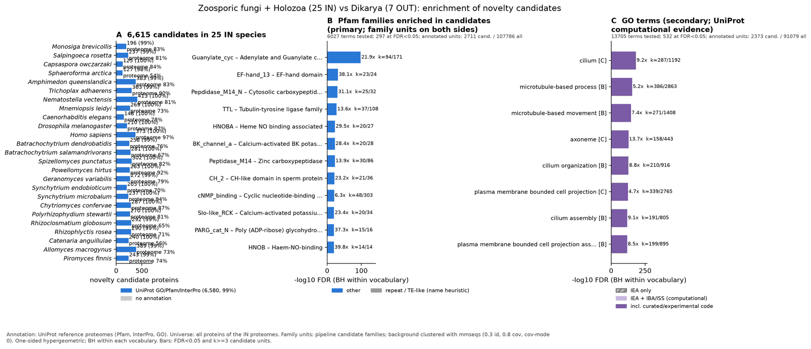

zoosporic holozoa vs dikarya: functional enrichment (novelty)
One-sided hypergeometric test per term; Benjamini-Hochberg FDR within each scope, level and vocabulary. Candidates are the novelty candidates: gene families present in the IN group and absent from the OUT group. Universe: proteome. Background clustered: True (318843 sequences in 182816 clusters, mmseqs easy-cluster --min-seq-id 0.3 -c 0.8). Family level: one unit per candidate family and per background cluster.
Sources: Pfam: 2026-01-27-Pfam38.2; InterPro entries: 110.0; GO: releases/2026-07-26; analysis generated 2026-10-12T14:56:47. Source tables: studies/eukaryotes/zoosporic_holozoa_vs_dikarya/analysis/enrichment/outputs/proteome_clustered.
Full record: PROVENANCE. Run report: report.html.
- Annotation provenance is not fully recorded: PROVENANCE.yaml lists the per-species annotation files and their checksums, but not the UniProt release they come from.
- GO results are secondary. GO annotations include computational evidence (IEA, IBA); the GO evidence column shows if a term has non-IEA support.
- Candidate families (pipeline clustering of candidates) and background clusters (mmseqs clustering of the background proteome) are made by different runs, so family-level counts are not fully comparable.
Summary figure

Annotation coverage
Fraction of proteins with at least one term per vocabulary. Universe = all proteins of the species; candidates = the candidate set.
| Species | Set | Proteins | Pfam | Pfam clan | InterPro | GO | Any |
|---|---|---|---|---|---|---|---|
| Monobrev | universe | 9156 | 73.2% | 63.4% | 82.1% | 68.4% | 83.1% |
| Monobrev | candidates | 196 | 93.4% | 65.8% | 99.5% | 89.3% | 99.5% |
| Salprose | universe | 11614 | 70.3% | 59.8% | 79.8% | 63.8% | 80.6% |
| Salprose | candidates | 237 | 92.0% | 64.6% | 98.3% | 88.6% | 98.7% |
| Capsowcz | universe | 8738 | 79.0% | 66.2% | 83.8% | 71.4% | 84.1% |
| Capsowcz | candidates | 125 | 96.0% | 74.4% | 100.0% | 92.0% | 100.0% |
| Sphaarct | universe | 18207 | 44.2% | 36.5% | 53.6% | 40.7% | 54.0% |
| Sphaarct | candidates | 127 | 86.6% | 66.1% | 97.6% | 83.5% | 97.6% |
| Amphquee | universe | 20174 | 73.0% | 63.1% | 83.0% | 64.0% | 83.3% |
| Amphquee | candidates | 383 | 91.4% | 66.8% | 99.2% | 88.0% | 99.5% |
| Tricadha | universe | 11518 | 84.1% | 70.4% | 89.9% | 77.1% | 90.4% |
| Tricadha | candidates | 303 | 94.1% | 69.3% | 99.0% | 87.1% | 99.3% |
| Nemavect | universe | 24428 | 73.5% | 62.6% | 80.4% | 63.6% | 81.0% |
| Nemavect | candidates | 413 | 94.7% | 68.5% | 99.5% | 84.3% | 99.8% |
| Mnemleid | universe | 19289 | 63.5% | 55.6% | 72.8% | 0.0% | 72.8% |
| Mnemleid | candidates | 269 | 96.3% | 66.2% | 99.6% | 0.0% | 99.6% |
| Caeneleg | universe | 19792 | 71.0% | 57.4% | 76.1% | 58.6% | 77.8% |
| Caeneleg | candidates | 148 | 98.0% | 79.0% | 100.0% | 96.0% | 100.0% |
| Drosmela | universe | 13814 | 80.4% | 63.1% | 84.4% | 74.7% | 87.0% |
| Drosmela | candidates | 210 | 97.1% | 71.0% | 100.0% | 90.5% | 100.0% |
| Homosapi | universe | 20652 | 94.4% | 75.1% | 96.4% | 93.8% | 97.4% |
| Homosapi | candidates | 373 | 97.0% | 70.8% | 99.5% | 98.9% | 100.0% |
| Batrdend | universe | 8610 | 68.0% | 55.5% | 75.5% | 64.4% | 75.9% |
| Batrdend | candidates | 258 | 91.9% | 66.7% | 98.8% | 83.0% | 98.8% |
| Batrsala | universe | 11060 | 60.0% | 49.6% | 66.2% | 53.6% | 66.6% |
| Batrsala | candidates | 281 | 94.0% | 64.8% | 99.6% | 83.3% | 99.6% |
| Spizpunc | universe | 8940 | 77.0% | 62.6% | 81.7% | 68.6% | 82.1% |
| Spizpunc | candidates | 302 | 97.0% | 66.2% | 99.3% | 81.8% | 99.7% |
| Powehirt | universe | 6533 | 88.3% | 72.6% | 92.2% | 79.7% | 92.5% |
| Powehirt | candidates | 265 | 94.3% | 64.5% | 99.6% | 81.5% | 99.6% |
| Geravari | universe | 8696 | 72.9% | 59.8% | 78.6% | 65.8% | 79.0% |
| Geravari | candidates | 272 | 93.8% | 65.1% | 98.9% | 80.5% | 99.3% |
| Syncendo | universe | 7895 | 64.4% | 52.3% | 69.6% | 59.2% | 70.0% |
| Syncendo | candidates | 205 | 93.7% | 62.0% | 99.5% | 82.0% | 99.5% |
| Syncmicr | universe | 6304 | 90.2% | 75.6% | 94.1% | 82.1% | 94.3% |
| Syncmicr | candidates | 237 | 94.1% | 63.7% | 99.6% | 81.0% | 99.6% |
| Chytconf | universe | 10661 | 80.1% | 68.1% | 86.9% | 72.9% | 87.3% |
| Chytconf | candidates | 287 | 93.4% | 65.2% | 99.7% | 81.2% | 99.7% |
| Polystew | universe | 9229 | 72.1% | 60.4% | 80.4% | 63.9% | 80.9% |
| Polystew | candidates | 270 | 95.2% | 65.2% | 99.6% | 84.1% | 99.6% |
| Rhizglob | universe | 16725 | 56.7% | 48.2% | 65.1% | 50.4% | 65.5% |
| Rhizglob | candidates | 292 | 91.8% | 66.1% | 99.0% | 81.5% | 99.3% |
| Rhizrose | universe | 11454 | 62.5% | 51.2% | 70.1% | 55.4% | 70.5% |
| Rhizrose | candidates | 290 | 92.8% | 61.0% | 97.6% | 80.7% | 98.6% |
| Cateangu | universe | 12590 | 48.7% | 39.4% | 55.5% | 44.3% | 55.8% |
| Cateangu | candidates | 240 | 91.2% | 62.5% | 99.2% | 85.0% | 100.0% |
| Allomacr | universe | 18611 | 65.4% | 53.1% | 72.9% | 59.8% | 73.3% |
| Allomacr | candidates | 389 | 91.5% | 64.8% | 99.5% | 86.9% | 99.5% |
| Pirofinn | universe | 10768 | 67.0% | 56.0% | 73.5% | 57.1% | 73.9% |
| Pirofinn | candidates | 243 | 93.8% | 63.0% | 98.8% | 81.9% | 99.2% |
| ALL_IN | universe | 325458 | 70.3% | 58.4% | 77.0% | 60.1% | 77.7% |
| ALL_IN | candidates | 6615 | 93.8% | 66.3% | 99.2% | 81.9% | 99.5% |
Tests summary
Per vocabulary: terms with FDR < 0.05 / terms tested. Protein level counts proteins; family level counts candidate families and background clusters.
| Scope | Level | Cand. units | Pfam sig / tested | Pfam clan sig / tested | InterPro sig / tested | GO sig / tested |
|---|---|---|---|---|---|---|
| whole_set | family | 2958 | 297 / 6027 | 48 / 600 | 564 / 12289 | 532 / 13705 |
| whole_set | protein | 6615 | 388 / 7694 | 72 / 619 | 709 / 16074 | 691 / 15077 |
| Allomacr | family | 265 | 7 / 440 | 8 / 251 | 17 / 1093 | 83 / 2399 |
| Allomacr | protein | 389 | 17 / 787 | 13 / 311 | 40 / 1845 | 132 / 3038 |
| Amphquee | family | 346 | 6 / 661 | 11 / 296 | 35 / 1516 | 134 / 2802 |
| Amphquee | protein | 383 | 12 / 804 | 13 / 325 | 47 / 1828 | 157 / 2991 |
| Batrdend | family | 254 | 1 / 248 | 4 / 200 | 6 / 650 | 67 / 1987 |
| Batrdend | protein | 258 | 2 / 307 | 8 / 215 | 11 / 785 | 74 / 2076 |
| Batrsala | family | 270 | 2 / 272 | 6 / 210 | 8 / 692 | 70 / 1949 |
| Batrsala | protein | 281 | 5 / 330 | 7 / 223 | 17 / 819 | 96 / 2038 |
| Caeneleg | family | 134 | 1 / 513 | 1 / 276 | 3 / 1240 | 62 / 3878 |
| Caeneleg | protein | 148 | 5 / 700 | 9 / 299 | 15 / 1651 | 91 / 4192 |
| Capsowcz | family | 119 | 2 / 364 | 2 / 242 | 5 / 890 | 15 / 2062 |
| Capsowcz | protein | 125 | 3 / 421 | 3 / 253 | 7 / 1020 | 21 / 2145 |
| Cateangu | family | 227 | 2 / 272 | 2 / 202 | 5 / 692 | 89 / 1944 |
| Cateangu | protein | 240 | 4 / 352 | 5 / 219 | 13 / 880 | 94 / 2050 |
| Chytconf | family | 256 | 2 / 396 | 3 / 244 | 9 / 974 | 84 / 2140 |
| Chytconf | protein | 287 | 6 / 590 | 7 / 280 | 12 / 1389 | 92 / 2408 |
| Drosmela | family | 197 | 8 / 529 | 5 / 278 | 16 / 1233 | 115 / 5154 |
| Drosmela | protein | 210 | 10 / 711 | 6 / 308 | 21 / 1635 | 131 / 5424 |
| Geravari | family | 270 | 3 / 317 | 8 / 228 | 9 / 800 | 105 / 2048 |
| Geravari | protein | 272 | 3 / 372 | 8 / 241 | 11 / 928 | 106 / 2142 |
| Homosapi | family | 321 | 12 / 758 | 11 / 334 | 25 / 1702 | 142 / 10060 |
| Homosapi | protein | 373 | 20 / 1326 | 18 / 394 | 55 / 2898 | 261 / 10899 |
| Mnemleid | family | 259 | 2 / 522 | 7 / 266 | 8 / 1197 | 0 / 0 (skipped_no_annotated_candidates) |
| Mnemleid | protein | 269 | 4 / 643 | 11 / 288 | 13 / 1467 | 0 / 0 (skipped_no_annotated_candidates) |
| Monobrev | family | 193 | 2 / 382 | 6 / 221 | 4 / 892 | 66 / 2094 |
| Monobrev | protein | 196 | 3 / 419 | 8 / 228 | 7 / 992 | 67 / 2169 |
| Nemavect | family | 374 | 5 / 745 | 6 / 341 | 21 / 1798 | 121 / 3040 |
| Nemavect | protein | 413 | 14 / 914 | 8 / 370 | 41 / 2214 | 147 / 3294 |
| Pirofinn | family | 233 | 1 / 318 | 4 / 208 | 9 / 788 | 62 / 2191 |
| Pirofinn | protein | 243 | 1 / 404 | 8 / 224 | 9 / 1002 | 86 / 2360 |
| Polystew | family | 260 | 3 / 323 | 6 / 217 | 8 / 810 | 75 / 1986 |
| Polystew | protein | 270 | 6 / 406 | 9 / 235 | 16 / 982 | 95 / 2095 |
| Powehirt | family | 262 | 3 / 308 | 8 / 219 | 6 / 761 | 88 / 1993 |
| Powehirt | protein | 265 | 3 / 358 | 9 / 234 | 6 / 880 | 87 / 2078 |
| Rhizglob | family | 273 | 1 / 444 | 6 / 244 | 15 / 1061 | 82 / 2437 |
| Rhizglob | protein | 292 | 3 / 596 | 8 / 268 | 14 / 1369 | 94 / 2624 |
| Rhizrose | family | 289 | 6 / 369 | 7 / 232 | 6 / 915 | 107 / 2125 |
| Rhizrose | protein | 290 | 6 / 408 | 7 / 244 | 9 / 1016 | 116 / 2194 |
| Salprose | family | 225 | 3 / 476 | 7 / 252 | 5 / 1094 | 83 / 2211 |
| Salprose | protein | 237 | 5 / 523 | 5 / 259 | 10 / 1218 | 84 / 2289 |
| Sphaarct | family | 125 | 1 / 391 | 2 / 237 | 4 / 1014 | 32 / 2246 |
| Sphaarct | protein | 127 | 1 / 440 | 2 / 246 | 4 / 1114 | 32 / 2303 |
| Spizpunc | family | 301 | 4 / 365 | 8 / 232 | 12 / 889 | 86 / 2446 |
| Spizpunc | protein | 302 | 4 / 424 | 8 / 245 | 12 / 1021 | 88 / 2536 |
| Syncendo | family | 203 | 1 / 259 | 5 / 198 | 0 / 649 | 62 / 1870 |
| Syncendo | protein | 205 | 2 / 296 | 7 / 214 | 3 / 735 | 63 / 1923 |
| Syncmicr | family | 236 | 1 / 298 | 7 / 212 | 3 / 750 | 68 / 1942 |
| Syncmicr | protein | 237 | 1 / 364 | 8 / 224 | 6 / 890 | 78 / 2049 |
| Tricadha | family | 263 | 5 / 442 | 6 / 273 | 8 / 1067 | 106 / 2509 |
| Tricadha | protein | 303 | 10 / 574 | 7 / 289 | 19 / 1393 | 123 / 2728 |
Top 25 Pfam terms (whole set, family level)
25 rows shown, ordered by FDR then p-value; 25 have FDR < 0.05 (bold).
| Term | Name | k / N cand. | n / M bg | Fold | FDR (BH) |
|---|---|---|---|---|---|
| PF00211 | Guanylate_cyc: Adenylate and Guanylate cyclase catalytic domain | 94 / 2711 | 171 / 107786 | 21.856 | 6.67e-99 |
| PF17958 | EF-hand_13: EF-hand domain | 23 / 2711 | 24 / 107786 | 38.102 | 1.05e-32 |
| PF18027 | Pepdidase_M14_N: Cytosolic carboxypeptidase N-terminal domain | 25 / 2711 | 32 / 107786 | 31.062 | 5.29e-31 |
| PF03133 | TTL: Tubulin-tyrosine ligase family | 37 / 2711 | 108 / 107786 | 13.621 | 1.56e-28 |
| PF07701 | HNOBA: Heme NO binding associated | 20 / 2711 | 27 / 107786 | 29.451 | 8.67e-24 |
| PF03493 | BK_channel_a: Calcium-activated BK potassium channel alpha subunit | 20 / 2711 | 28 / 107786 | 28.399 | 2.47e-23 |
| PF00246 | Peptidase_M14: Zinc carboxypeptidase | 30 / 2711 | 86 / 107786 | 13.869 | 2.51e-23 |
| PF06294 | CH_2: CH-like domain in sperm protein | 21 / 2711 | 36 / 107786 | 23.193 | 6.99e-22 |
| PF00027 | cNMP_binding: Cyclic nucleotide-binding domain | 48 / 2711 | 303 / 107786 | 6.298 | 2.94e-21 |
| PF22614 | Slo-like_RCK: Calcium-activated potassium channel slowpoke-like RCK domain | 20 / 2711 | 34 / 107786 | 23.388 | 5.74e-21 |
| PF20811 | PARG_cat_N: Poly (ADP-ribose) glycohydrolase (PARG), helical domain | 15 / 2711 | 16 / 107786 | 37.274 | 8.41e-21 |
| PF07700 | HNOB: Haem-NO-binding | 14 / 2711 | 14 / 107786 | 39.759 | 1.97e-20 |
| PF05028 | PARG_cat_C: Poly (ADP-ribose) glycohydrolase (PARG), Macro domain fold | 17 / 2711 | 25 / 107786 | 27.036 | 2.54e-19 |
| PF00003 | 7tm_3: 7 transmembrane sweet-taste receptor of 3 GCPR | 51 / 2711 | 385 / 107786 | 5.267 | 2.95e-19 |
| PF30846 | CEP164_N: CEP164 N-terminal domain | 15 / 2711 | 18 / 107786 | 33.132 | 3.00e-19 |
| PF28678 | CXorf58_MFI: CXorf58/MFI domain | 16 / 2711 | 23 / 107786 | 27.658 | 1.92e-18 |
| PF25462 | Beta-barrel_INTS6: INTS6 beta-barrel domain | 13 / 2711 | 14 / 107786 | 36.919 | 7.60e-18 |
| PF26187 | Ig_NPHP4_4th: NPH4 Ig-like domain 4 | 13 / 2711 | 15 / 107786 | 34.458 | 5.26e-17 |
| PF02996 | Prefoldin: Prefoldin subunit | 18 / 2711 | 38 / 107786 | 18.833 | 1.01e-16 |
| PF13870 | CCDC113_CCDC96_CC: CCDC113/CCDC96, coiled-coil | 14 / 2711 | 19 / 107786 | 29.296 | 1.16e-16 |
| PF21773 | ODAD1_CC: ODAD1 central coiled coil region | 14 / 2711 | 19 / 107786 | 29.296 | 1.16e-16 |
| PF23277 | Ig_Dlec1_1: Deleted in lung and esophageal cancer protein 1 Ig domain | 12 / 2711 | 13 / 107786 | 36.7 | 2.18e-16 |
| PF01167 | Tub: Tub family | 14 / 2711 | 20 / 107786 | 27.831 | 3.29e-16 |
| PF08683 | CAMSAP_CKK: Microtubule-binding calmodulin-regulated spectrin-associated | 14 / 2711 | 20 / 107786 | 27.831 | 3.29e-16 |
| PF03607 | DCX: Doublecortin | 19 / 2711 | 47 / 107786 | 16.073 | 3.29e-16 |
Top 25 InterPro terms (whole set, family level)
25 rows shown, ordered by FDR then p-value; 25 have FDR < 0.05 (bold).
| Term | Name | k / N cand. | n / M bg | Fold | FDR (BH) |
|---|---|---|---|---|---|
| IPR001054 | Domain:Adenylyl cyclase class-3/4/guanylyl cyclase | 99 / 2923 | 190 / 123867 | 22.08 | 1.88e-103 |
| IPR029787 | Homologous_superfamily:Nucleotide cyclase | 99 / 2923 | 214 / 123867 | 19.604 | 5.59e-97 |
| IPR018297 | Conserved_site:Adenylyl cyclase class-4/guanylyl cyclase, conserved site | 36 / 2923 | 53 / 123867 | 28.784 | 1.92e-42 |
| IPR050821 | Family:Cytosolic carboxypeptidase | 30 / 2923 | 40 / 123867 | 31.783 | 2.75e-37 |
| IPR041534 | Domain:PP2A regulatory subunit B'', EF-hand domain | 23 / 2923 | 24 / 123867 | 40.611 | 2.00e-33 |
| IPR040626 | Domain:Cytosolic carboxypeptidase, N-terminal | 25 / 2923 | 32 / 123867 | 33.107 | 1.12e-31 |
| IPR011989 | Homologous_superfamily:Armadillo-like helical | 142 / 2923 | 1839 / 123867 | 3.272 | 4.97e-31 |
| IPR004344 | Family:Tubulin-tyrosine ligase/Tubulin polyglutamylase | 37 / 2923 | 108 / 123867 | 14.518 | 1.71e-29 |
| IPR026983 | Family:Dynein heavy chain | 41 / 2923 | 172 / 123867 | 10.101 | 7.47e-26 |
| IPR000834 | Domain:Peptidase M14, carboxypeptidase A | 31 / 2923 | 87 / 123867 | 15.1 | 3.82e-25 |
| IPR011645 | Domain:Haem NO binding associated | 20 / 2923 | 27 / 123867 | 31.39 | 2.28e-24 |
| IPR003929 | Domain:Calcium-activated potassium channel BK, alpha subunit | 20 / 2923 | 28 / 123867 | 30.269 | 7.15e-24 |
| IPR011992 | Homologous_superfamily:EF-hand domain pair | 95 / 2923 | 1108 / 123867 | 3.633 | 1.18e-23 |
| IPR036322 | Homologous_superfamily:WD40-repeat-containing domain superfamily | 144 / 2923 | 2277 / 123867 | 2.68 | 6.02e-23 |
| IPR015943 | Homologous_superfamily:WD40/YVTN repeat-like-containing domain superfamily | 155 / 2923 | 2583 / 123867 | 2.543 | 1.55e-22 |
| IPR010441 | Domain:CH-like domain in sperm protein | 21 / 2923 | 36 / 123867 | 24.72 | 1.92e-22 |
| IPR042463 | Homologous_superfamily:Haem NO binding associated domain superfamily | 15 / 2923 | 15 / 123867 | 42.377 | 2.73e-22 |
| IPR018490 | Homologous_superfamily:Cyclic nucleotide-binding domain superfamily | 53 / 2923 | 382 / 123867 | 5.879 | 4.81e-22 |
| IPR016024 | Homologous_superfamily:Armadillo-type fold | 156 / 2923 | 2649 / 123867 | 2.496 | 5.67e-22 |
| IPR039720 | Family:Transmembrane protein 94 | 17 / 2923 | 21 / 123867 | 34.305 | 7.01e-22 |
| IPR001680 | Repeat:WD40 repeat | 129 / 2923 | 1975 / 123867 | 2.768 | 8.97e-22 |
| IPR003148 | Domain:Regulator of K+ conductance, N-terminal lobe | 20 / 2923 | 34 / 123867 | 24.927 | 1.53e-21 |
| IPR000595 | Domain:Cyclic nucleotide-binding domain | 51 / 2923 | 363 / 123867 | 5.954 | 1.60e-21 |
| IPR007724 | Family:Poly(ADP-ribose) glycohydrolase | 17 / 2923 | 22 / 123867 | 32.746 | 2.51e-21 |
| IPR048362 | Domain:Poly (ADP-ribose) glycohydrolase, helical domain | 15 / 2923 | 16 / 123867 | 39.728 | 2.91e-21 |
Top 15 GO terms (whole set, family level) — secondary, computational evidence (IEA/IBA) included
15 rows shown, ordered by FDR then p-value; 15 have FDR < 0.05 (bold).
| Term | Name | k / N cand. | n / M bg | Fold | FDR (BH) | GO evidence | Families with non-IEA |
|---|---|---|---|---|---|---|---|
| GO:0005929 | cellular_component:cilium | 287 / 2373 | 1192 / 91079 | 9.241 | 7.63e-184 | has_non_IEA | 125 |
| GO:0007017 | biological_process:microtubule-based process | 386 / 2373 | 2863 / 91079 | 5.175 | 1.83e-156 | has_non_IEA | 183 |
| GO:0007018 | biological_process:microtubule-based movement | 271 / 2373 | 1408 / 91079 | 7.387 | 8.10e-147 | has_non_IEA | 127 |
| GO:0005930 | cellular_component:axoneme | 158 / 2373 | 443 / 91079 | 13.689 | 7.56e-129 | has_non_IEA | 74 |
| GO:0044782 | biological_process:cilium organization | 210 / 2373 | 916 / 91079 | 8.799 | 1.07e-128 | has_non_IEA | 115 |
| GO:0120025 | cellular_component:plasma membrane bounded cell projection | 339 / 2373 | 2765 / 91079 | 4.706 | 4.23e-124 | has_non_IEA | 157 |
| GO:0042995 | cellular_component:cell projection | 339 / 2373 | 2772 / 91079 | 4.694 | 7.69e-124 | has_non_IEA | 157 |
| GO:0060271 | biological_process:cilium assembly | 191 / 2373 | 805 / 91079 | 9.107 | 8.82e-120 | has_non_IEA | 105 |
| GO:0120031 | biological_process:plasma membrane bounded cell projection assembly | 199 / 2373 | 895 / 91079 | 8.534 | 3.00e-119 | has_non_IEA | 112 |
| GO:0030031 | biological_process:cell projection assembly | 200 / 2373 | 909 / 91079 | 8.445 | 5.52e-119 | has_non_IEA | 113 |
| GO:0036064 | cellular_component:ciliary basal body | 151 / 2373 | 610 / 91079 | 9.501 | 5.57e-97 | has_non_IEA | 72 |
| GO:0120036 | biological_process:plasma membrane bounded cell projection organization | 228 / 2373 | 1672 / 91079 | 5.234 | 5.68e-91 | has_non_IEA | 130 |
| GO:0005815 | cellular_component:microtubule organizing center | 223 / 2373 | 1724 / 91079 | 4.965 | 2.32e-84 | has_non_IEA | 113 |
| GO:0042073 | biological_process:intraciliary transport | 93 / 2373 | 226 / 91079 | 15.794 | 4.60e-82 | has_non_IEA | 38 |
| GO:0030030 | biological_process:cell projection organization | 230 / 2373 | 1909 / 91079 | 4.624 | 5.23e-81 | has_non_IEA | 132 |
Actin cytoskeleton controls
Known actin-related families and how many of their proteins pass each filter. Protein ID columns are left out.
| control | pfam_ids | desc_regex | IN_universe | IN_in_matrix | IN_pass_ingroup_rule | candidates | near_miss_out1 | near_miss_out2 | n_Monobrev | n_Salprose | n_Capsowcz | n_Sphaarct | n_Amphquee | n_Tricadha | n_Nemavect | n_Mnemleid | n_Caeneleg | n_Drosmela | n_Homosapi | n_Batrdend | n_Batrsala | n_Spizpunc | n_Powehirt | n_Geravari | n_Syncendo | n_Syncmicr | n_Chytconf | n_Polystew | n_Rhizglob | n_Rhizrose | n_Cateangu | n_Allomacr | n_Pirofinn | n_Sacccere | n_Schipomb | n_Neurcras | n_Aspenidu | n_Mycomayd | n_Crypneof | n_Coprcine |
|---|---|---|---|---|---|---|---|---|---|---|---|---|---|---|---|---|---|---|---|---|---|---|---|---|---|---|---|---|---|---|---|---|---|---|---|---|---|---|---|---|
| Arp2/3 ARPC2 (P34-Arc) | PF04045 | 26 | 26 | 26 | 0 | 0 | 0 | 1 | 1 | 1 | 1 | 1 | 1 | 1 | 1 | 1 | 1 | 1 | 1 | 1 | 1 | 1 | 1 | 1 | 1 | 1 | 1 | 1 | 1 | 1 | 2 | 1 | 1 | 1 | 1 | 1 | 1 | 1 | 1 | |
| Arp2/3 ARPC3 (P21-Arc) | PF04062 | 27 | 27 | 27 | 0 | 0 | 0 | 1 | 1 | 1 | 1 | 1 | 1 | 1 | 1 | 1 | 2 | 1 | 1 | 1 | 1 | 1 | 1 | 1 | 1 | 1 | 1 | 1 | 1 | 1 | 2 | 1 | 1 | 1 | 1 | 1 | 1 | 1 | 1 | |
| Arp2/3 ARPC4 | PF05856 | 25 | 25 | 25 | 0 | 0 | 0 | 1 | 1 | 1 | 1 | 1 | 1 | 1 | 1 | 1 | 1 | 1 | 1 | 1 | 1 | 1 | 1 | 1 | 1 | 1 | 1 | 1 | 1 | 1 | 1 | 1 | 1 | 1 | 1 | 1 | 1 | 1 | 1 | |
| Arp2/3 ARPC5 (P16-Arc) | PF04699 | 28 | 28 | 24 | 0 | 0 | 1 | 0 | 1 | 1 | 1 | 1 | 1 | 1 | 1 | 2 | 1 | 2 | 1 | 1 | 1 | 1 | 1 | 1 | 1 | 2 | 1 | 1 | 1 | 1 | 2 | 1 | 1 | 1 | 1 | 1 | 1 | 1 | 1 | |
| Arp2/3 ARPC1 (description only) | arp2/3 complex.*(41|p41|subunit 1)|ARPC1 | 3 | 3 | 3 | 0 | 0 | 0 | 0 | 0 | 0 | 1 | 0 | 0 | 0 | 0 | 0 | 0 | 0 | 0 | 1 | 0 | 0 | 0 | 1 | 0 | 0 | 0 | 0 | 0 | 0 | 0 | 0 | 0 | 0 | 0 | 0 | 1 | 0 | 0 | |
| Arp2 / Arp3 (description only) | actin-related protein (2|3)\b|\bARP[23]\b | 169 | 169 | 162 | 0 | 0 | 1 | 5 | 6 | 5 | 5 | 6 | 6 | 7 | 6 | 8 | 8 | 11 | 6 | 7 | 6 | 7 | 6 | 7 | 6 | 6 | 8 | 5 | 6 | 7 | 13 | 6 | 7 | 7 | 6 | 7 | 7 | 5 | 5 | |
| WAVE complex NCKAP1 | PF09735 | 25 | 25 | 24 | 22 | 0 | 0 | 1 | 1 | 1 | 0 | 1 | 2 | 1 | 1 | 1 | 1 | 2 | 1 | 1 | 1 | 1 | 1 | 1 | 1 | 0 | 1 | 0 | 1 | 1 | 2 | 1 | 0 | 0 | 0 | 0 | 0 | 0 | 0 | |
| WAVE complex CYFIP (FragX_IP) | PF05994 | 31 | 30 | 27 | 26 | 0 | 0 | 1 | 2 | 1 | 0 | 5 | 1 | 1 | 1 | 1 | 1 | 2 | 1 | 1 | 1 | 1 | 1 | 1 | 1 | 0 | 1 | 0 | 1 | 1 | 4 | 1 | 0 | 0 | 0 | 0 | 0 | 0 | 0 | |
| WAVE complex ABI | PF07815|PF27594 | 13 | 12 | 7 | 0 | 0 | 0 | 0 | 1 | 1 | 0 | 1 | 1 | 3 | 1 | 1 | 1 | 3 | 0 | 0 | 0 | 0 | 0 | 0 | 0 | 0 | 0 | 0 | 0 | 0 | 0 | 0 | 0 | 0 | 0 | 0 | 0 | 0 | 0 | |
| SCAR/WAVE (SCAR_helical) | PF27569 | 27 | 27 | 15 | 15 | 0 | 0 | 1 | 2 | 1 | 0 | 2 | 1 | 1 | 3 | 1 | 1 | 3 | 1 | 1 | 1 | 1 | 1 | 1 | 1 | 0 | 1 | 0 | 1 | 1 | 0 | 1 | 0 | 0 | 0 | 0 | 0 | 0 | 0 | |
| WASP family (WH1) | PF00568 | 63 | 61 | 19 | 0 | 0 | 2 | 2 | 3 | 3 | 3 | 5 | 5 | 5 | 3 | 2 | 4 | 11 | 1 | 1 | 1 | 1 | 1 | 1 | 1 | 1 | 1 | 1 | 1 | 1 | 4 | 1 | 1 | 1 | 1 | 1 | 1 | 1 | 2 | |
| WH2 motif (WASP, WAVE, others) | PF02205 | 70 | 58 | 15 | 5 | 0 | 1 | 3 | 6 | 5 | 2 | 4 | 3 | 3 | 4 | 4 | 4 | 15 | 3 | 1 | 1 | 1 | 1 | 1 | 1 | 1 | 1 | 0 | 1 | 1 | 2 | 2 | 2 | 2 | 1 | 3 | 2 | 2 | 2 | |
| Formin FH2 | PF02181 | 162 | 158 | 130 | 7 | 9 | 14 | 8 | 8 | 6 | 8 | 12 | 4 | 11 | 8 | 7 | 6 | 15 | 4 | 6 | 4 | 4 | 4 | 3 | 4 | 5 | 6 | 5 | 5 | 3 | 9 | 7 | 2 | 3 | 1 | 1 | 2 | 1 | 2 | |
| Formin Drf_GBD / Drf_FH3 / Drf_DAD | PF06371|PF06367|PF06345 | 115 | 114 | 88 | 5 | 5 | 6 | 5 | 5 | 3 | 5 | 7 | 4 | 9 | 3 | 3 | 5 | 9 | 3 | 4 | 4 | 3 | 4 | 2 | 3 | 3 | 4 | 3 | 7 | 3 | 7 | 7 | 1 | 4 | 2 | 2 | 2 | 2 | 3 | |
| Ena/VASP (VASP_tetra) | PF08776 | 5 | 5 | 0 | 0 | 0 | 0 | 1 | 0 | 0 | 0 | 0 | 0 | 0 | 0 | 0 | 1 | 3 | 0 | 0 | 0 | 0 | 0 | 0 | 0 | 0 | 0 | 0 | 0 | 0 | 0 | 0 | 0 | 0 | 0 | 0 | 0 | 0 | 0 | |
| Coronin (description only) | coronin | 63 | 63 | 61 | 2 | 0 | 0 | 1 | 1 | 2 | 2 | 2 | 2 | 4 | 2 | 2 | 2 | 7 | 1 | 1 | 3 | 3 | 4 | 1 | 2 | 4 | 2 | 2 | 4 | 1 | 4 | 4 | 1 | 1 | 1 | 1 | 1 | 1 | 1 | |
| Cortactin (HS1_rep) | PF02218 | 11 | 11 | 10 | 1 | 0 | 0 | 1 | 1 | 1 | 0 | 1 | 1 | 1 | 1 | 0 | 1 | 2 | 0 | 0 | 0 | 0 | 0 | 0 | 0 | 0 | 0 | 0 | 0 | 1 | 0 | 0 | 0 | 0 | 0 | 0 | 0 | 0 | 0 | |
| Myosin 2 tail (Myosin_tail_1) | PF01576 | 63 | 61 | 52 | 0 | 0 | 0 | 1 | 1 | 3 | 1 | 3 | 0 | 2 | 6 | 8 | 4 | 19 | 1 | 1 | 1 | 1 | 1 | 1 | 1 | 1 | 1 | 1 | 2 | 0 | 1 | 2 | 0 | 0 | 0 | 0 | 0 | 0 | 1 | |
| Myosin head (all myosins) | PF00063 | 377 | 377 | 371 | 0 | 0 | 0 | 32 | 32 | 23 | 15 | 19 | 12 | 20 | 10 | 17 | 14 | 39 | 7 | 8 | 9 | 9 | 7 | 6 | 9 | 13 | 7 | 14 | 12 | 8 | 21 | 14 | 5 | 5 | 4 | 5 | 4 | 4 | 5 |
Page written by bin/generate_enrichment_page.py.